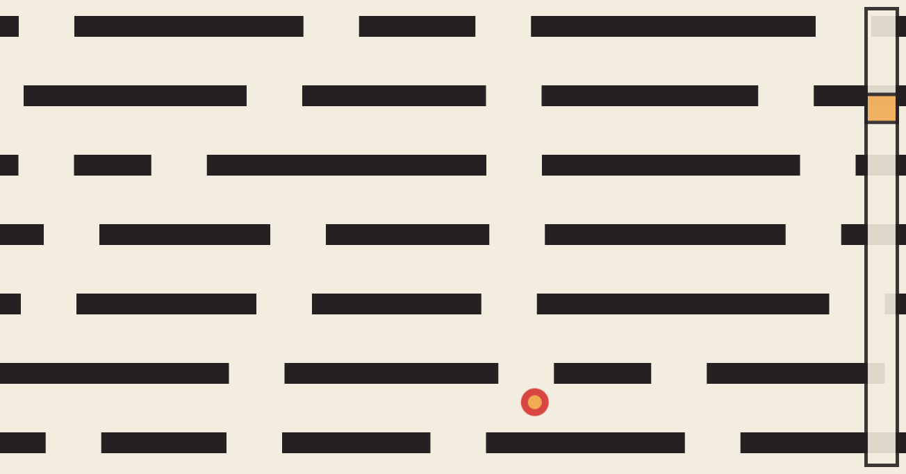
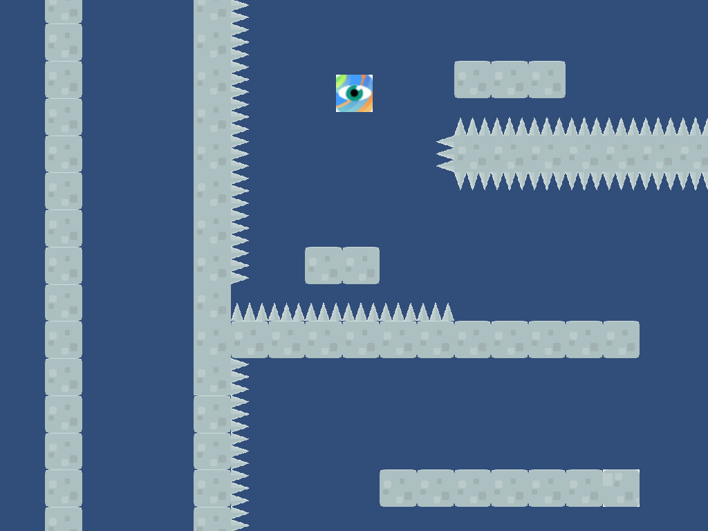
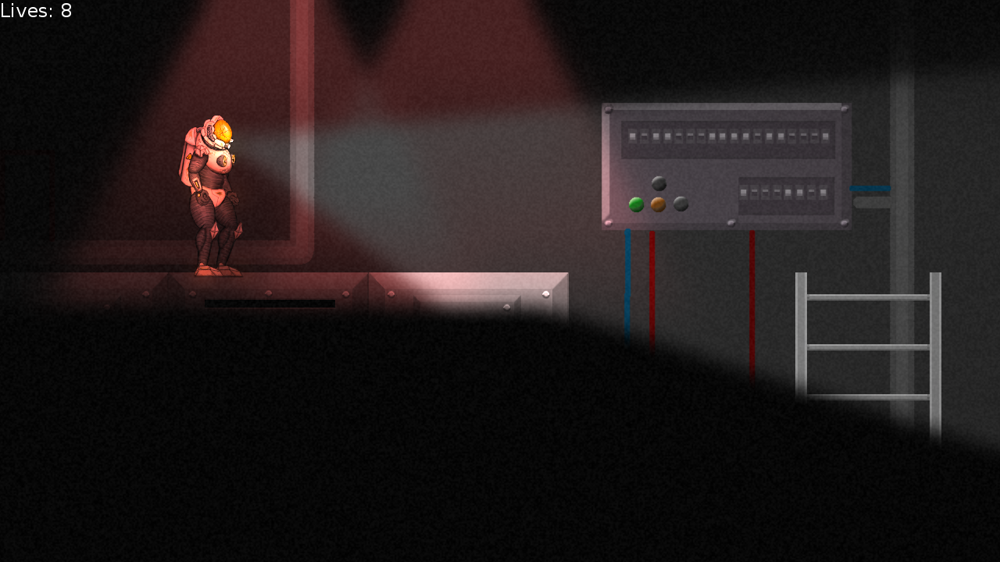

Eingereichte Spiele
Submitted Games
Auf dieser Seite findet ihr alle eingereichten Spiele, die in diesen 48 Stunden entstanden sind und bis jetzt eingereicht wurden (die Liste ist zur Zeit unvollständig).
On this web page, you can find all submitted games that were created during the 48h jam time and have been uploaded so far (the list is currently incomplete).
-

Dragon Egg
by Marlin
made with Unity engine -

Drop
by Jonas
made with Phaser HTML5 game engine -

Linewars
by Daniel, Eiko, Robin
made from scratch using Python websockets and HTML5 canvas -

Spike Fall
by Florian, Malisa
made with Unity engine -

TerminationShock
by Joel, Lukas, Markus
made with LÖVE